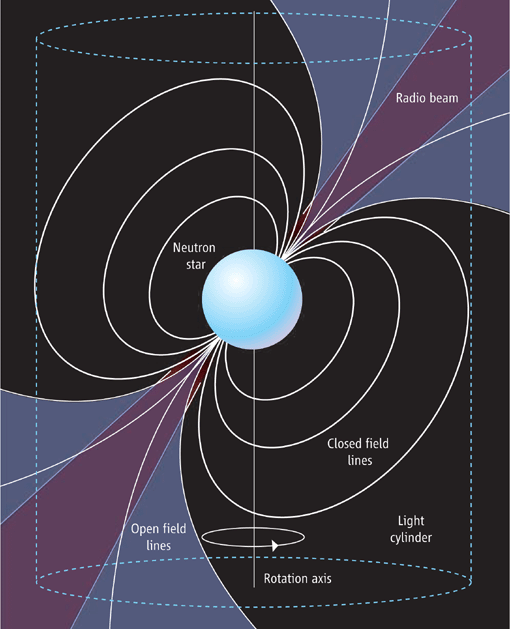

Púlsares
Autora: Gabriela Figueroa
Estrellas de Neutrones
Las estrellas de neutrones son el resultado final de la evolución de cierto tipo de estrellas denominadas masivas, las masas de estas estrellas progenitoras rondan entre 8 y 20 MO. Varios modelos nos muestran que el radio de estos objetos va entre 10.5 - 11.2 km para masas entre 0.5 y 2 MO con una densidad de aproximadamente 6.7x10-14 g /cm3, aunque sepamos que la mayoría de los valores medidos se acercan a 1.4 MO, la masa máxima de las estrellas de neutrones es de 3 MO.
Cuando una estrella agota su fuente de energía, colapsa por su propia gravedad, de esta manera, el núcleo empieza a contraerse y continúa hasta que la temperatura en las zonas centrales son tan altas que no se puede destruir más los núcleos de hierro. La contracción del núcleo se detiene pero las capas exteriores siguen contrayéndose por lo que se produce un rebote de las capas exteriores, lo cual lleva a una gran explosión, que denominamos supernova de tipo II. Cuando la masa del remanente estelar excede los 1.4 MO (límite de Chandrasekhar), la presión es insuficiente para ser equilibrada con la fuerza gravitacional y colapsa en una estrella de neutrones.
Después del colapso estelar, la conservación del momento angular y del flujo magnético provoca que la estrella de neutrones alcance velocidades angulares altísimas junto con campos magnéticos muy intensos.
La composición principal de estas estrellas es un fluido de neutrones, en equilibrio con aproximadamente 5% de protones y electrones, la proporción está determinada por un equilibrio entre la desintegración de neutrones y la asociación protón-electrón; una corteza exterior cristalina solida en forma de red, de aproximadamente 1 km de espesor, la misma, está hecha de núcleos pesados (hierro cerca de la superficie, con núcleos pesados por debajo cada vez más ricos en neutrones) y un posible núcleo sólido como podemos ver la figura 1.
.PNG)
Fig 1: Modelo de la composición de una estrella de neutrones.
Púlsares
Para catalogar a una estrella de neutrones como púlsar, la misma debe que tener un campo magnético muy fuerte (miles de millones de veces más intenso que el de la Tierra) y una alta rotación (incluso a miles de revoluciones por minuto). Al tener campos magnéticos tan fuertes, provocan una desaceleración en la velocidad de rotación del púlsar, esto ocurre a través de la pérdida de momento angular en la frecuencia de rotación, de esta manera, podemos ver que los púlsares jóvenes son los que tienen mayores rotaciones por segundo.
Los púlsares se consideran los faros de la galaxia, son estrellas de neutrones que giran muy rápidamente y poseen un campo magnético muy fuerte (miles de millones de veces más intenso que el de la Tierra), el mismo, al estar desalineado de su eje de rotación, produce haces cónicos de radiación electromagnética que precesan periódicamente alrededor del eje de rotación como podemos observar en la figura 2, esta radiación viaja por el espacio hasta abordar a la Tierra con cada rotación de la estrella formando pulsos que se observan en ondas de radio principalmente. El modelo de "faro" se produce cuando el eje magnético cruza nuestra línea de visión una vez por rotación.

Fig2: Representación de un púlsar
Los púlsares fueron descubiertos accidentalmente por Jocelyn Bell en 1967 cuando los picos de emisión de radio aparecieron esporádicamente durante el curso de otra investigación. Tras algunas observaciones, Bell notó que la emisión provenía del mismo lugar de la bóveda celeste, lo cual indicaba que la emisión no tenía una fuente terrestre. Algunas observaciones después, con mayor tiempo de resolución, mostraron que se trataba de un tren de pulsos con un periodo preciso.
En el exterior de la estrella, domina completamente el campo magnético, el mismo juega un papel crucial en las características observables de la misma. Un campo eléctrico local es inducido fuera de la estrella por el campo magnético rotante, esto provoca una influencia abrumadora que extrae plasma desde la superficie del púlsar, esto crea una región llamada magnetósfera, la cual está ionizada de plasma de alta energía, dentro de la misma se originan los haces de radiación electromagnética que mencionamos anteriormente.
Efectos del Medio Interestelar
Como el medio interestelar (MIE) está formado por gas, plasma, polvo y rayos cósmicos, éstos, afectan la señal que emite el pulsar. El efecto que más podemos destacar, es el fenómeno de dispersión: la velocidad de fase de las ondas electromagnéticas al propagarse por el plasma ionizado del MIE depende de la frecuencia, esto quiere decir que a menor frecuencia, menor velocidad de propagación como se ve en la figura 3. Esto genera que si dos pulsos de distinta frecuencia son emitidos del pulsar al mismo tiempo, el pulso de menor frecuencia sufrirá un retraso temporal con respecto al de mayor frecuencia, provocando su llegada tardía, recalquemos que esto nos muestra variaciones de fase en los pulsos pero no variaciones en su amplitud.
.PNG)
Fig3: Dispersión de frecuencia en el tiempo de llegada del pulso de PSR B1641-45
Pulsar Timing
Desde la formulación de la relatividad especial, entendemos que el tiempo propio de un sistema no es el mismo para todos los observadores, surge naturalmente el desafío de poder medir el tiempo en distintos sistemas que no sean el terrestre. Podemos tomar como reloj natural a la rotación de los planetas, sin embargo, fuera del sistema solar, no hay otro reloj con la precisión de la rotación de un púlsar. Los pulsos de radio no solo nos proporcionan la información sobre la naturaleza de la fuente, sino también nos brindan la posición de la misma de manera precisa.
El método de Pulsar timing se basa en la medición de los TOAs (Time Of Arrival), que son los tiempos de llegada de un pulso y en la identificación de los fenómenos que afectan al mismo. La precisión de las observaciones conllevan un análisis complejo que involucran parámetros como la rotación terrestre, dinámica del sistema solar, propagación interestelar y dinámica del púlsar como tal.
El procedimiento, consiste en aplicar correcciones a los TOAs observados, llevándolos a un sistema de referencia inercial, como lo es el baricentro, esta corrección la podemos aplicar mediante el uso de efemérides planetarias, de forma que no tengan los efectos derivados del movimiento de la Tierra; de esta manera, podemos estudiar la rotación intrínseca del púlsar y de su movimiento orbital; los efectos del medio interestelar se pueden compensar mediante el uso de observaciones en diferentes bandas de frecuencia.
Por otro lado, esto nos permite definir lo que son los residuos, los mismos, son la diferencia entre los tiempos de llegada observados y los previstos. Las variaciones sistemáticas de los residuos indican errores en el modelo del púlsar o la presencia de fenómenos no modelados que afectan a los TOAs, a su vez, examinando los residuos restantes, nos permite investigar otro tipo de fenómenos como perturbaciones relativistas en sistemas binarios u ondas gravitacionales.
Bibliografía
-
Compact Objects in Astrophysics. White Dwarfs, Neutron Stars and Black Holes - Camenzind, M. - Springer – 2007
-
Pulsar Astronomy - Lyne, A. - Graham-Smith, F. - Cambridge astrophysics series - Fourth edition - 2012
-
Manchester R. N.- 2017 - "Pulsar timing and its aplications" - Journal of Physics: Conference Series
Referencias
Comments (1)
Roberto Gamen said
at 12:36 pm on Aug 6, 2021
Reply Delete
Por favor, explicar lo que marqué en rojo. No entiendo qué quiere decir.